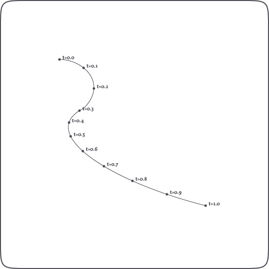
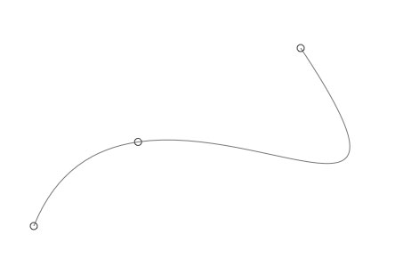

Path Mathematics
Paths in NodeBox consist of Bezier curves. Each curve has a starting point and an ending point, and control handles. But what if we want to know the location of a point on the path that is not one of these, but somewhere in between? What is the location of halfway the a curve for example? A path in NodeBox has some interesting methods we can use:
path.points(amount=100)
path.point(t)
path.addpoint(t)
The path.points() method returns a list containing amount points along the path. In the same way the path.point() method returns a single point at t, which is a number between 0.0 and 1.0 representing the time on the path. The path.addpoint() inserts a new point at t on the path.
A path also has the following properties:
- path.length: returns the total length of the path.
- path.contours: a list of separate contours in the path (these are paths as well).
These speed-optimized commands are extremely useful when calculating orbits of animated elements moving down an invisible path in an animation, when creating custom type like the LetterKnitter, when growing grass on shapes, and so on and so on.
A special thanks goes to professor F. De Smedt at the Free University of Brussels for his integration and interpolation algorithms (also check the de Casteljau's algorithm).

Finding points on a path
The example above is an illustration of how points on a path can be found with t (a number between 0.0 and 1.0), which represents time on the path. When t is 0.5, this means halfway the path. 0.0 is the origin of the path, 1.0 the end.
The code:
nofill() stroke(0) autoclosepath(False) beginpath(100,100) curveto(150, 100, 200, 150, 150, 200) curveto(50, 250, 200, 350, 400, 400) path = endpath() for t in range(11): pt = path.point(0.1*t) oval(pt.x-2, pt.y-2, 4, 4)
And it's even easier like this:
for pt in path.points(11): oval(pt.x-2, pt.y-2, 4, 4)
It's easy to create path filters this way (in analogy to image filters). Here are some good examples.
Inserting points on a path
Injecting new points in the path is equally easy:
autoclosepath(False) beginpath(100, 500) curveto(200,250, 600,600, 400,300) path = endpath(draw=False) nofill() stroke(0.5) drawpath(path) path.addpoint(0.25) stroke(0.2) for point in path: oval(point.x-4, point.y-4, 8, 8)

Contours in a path
A path is basically made up of segments: two points and the curve in between. A group of segments that has a beginning and an ending, or is closed, is a contour. Character glyphs are a composite of contours (for example: the inner and outer oval of the character "o" are two contours). In typography it's often useful to get the separate contours.
fontsize(50) path = textpath("contours", 10, 100) for contour in path.contours: nofill() stroke(random(0.5)) drawpath(contour)